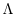
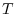

Next:
議論と発展
Up:
方法
Previous:
スパイク時系列からのヒストグラムの作成
Contents
Index
平均積分二乗誤差及びコスト関数の導入
スパイク時系列のレート
とヒストグラムの当てはまりの良さは平均積分二乗誤差(Mean Integrated Squared Error, MISE)で評価する. 十分長い定常なスパイク時系列が与えられた場合MISEは次式で与えられる.
(3)
ここで はレート過程
の経路によるアンサンブル平均を意味し, はレート
の区間幅
内での時間平均がである場合のスパイク数の条件付き確率分布(式
2
)による平均操作を表す.
MISEを区間幅
内でのレートのゆらぎとスパイク生成のゆらぎに分割し, さらに区間幅
の選択に依らない項を除いたコスト関数を導入することができる.
(4)
式
4
はの分散を第２項に含んでいるので, 観測量のみからなる式に書き直し次式を得る.
(5)
ヒストグラムの最適区間幅決定の手順を以下にまとめ, 図
1
-aに(i)-(iv)の手順から得られたコスト関数を示す.
[
c]最適区間幅決定のレシピ (i) 観測時間, 試行回数
のスパイク時系列を区間幅
で 個に分割する. 番目の区間に入るスパイクの数を数えとする.
(ii) スパイク数の標本平均 , 及び不偏分散 を計算する.
(iii)スパイク統計量,
からコスト関数(式
5
),
(6)
を計算する.
(iv) 異なる
に対して(i)から(iii)を繰り返しコスト関数の最小値を与える
を探す.
Next:
議論と発展
Up:
方法
Previous:
スパイク時系列からのヒストグラムの作成
Contents
Index
hideaki 2006-07-11